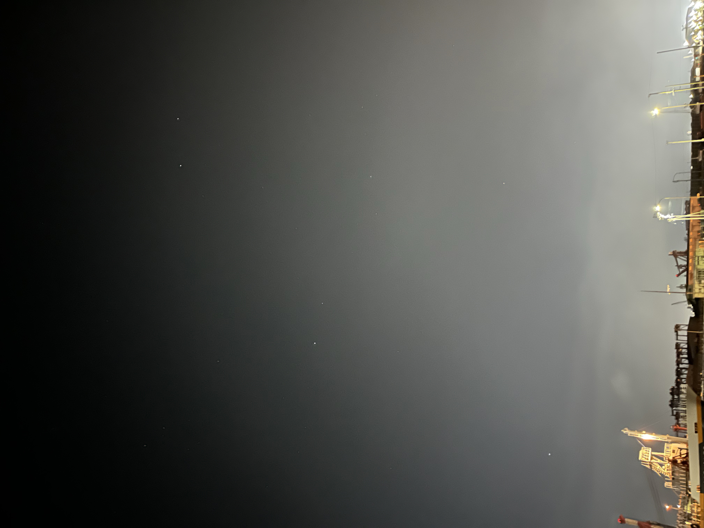
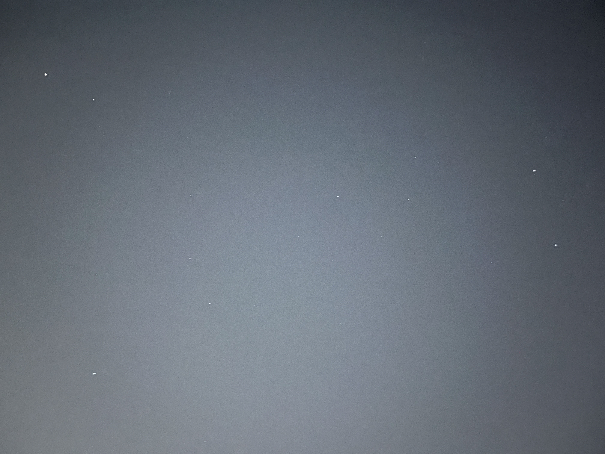
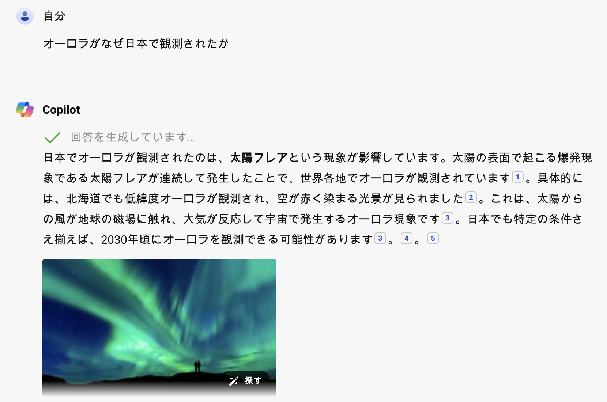

5月の活動
全天で一番明るく見える恒星「シリウス」は5月下旬には見えなくなります。

それでもカペラ, ポルックス, プロキオンは6月初旬まで見えていて、華やかな冬の星座の1等星たちの名残を楽しめます。

春の星座の1等星はアルクトゥルス(うしかい座), スピカ(おとめ座), レグルス(しし座)です。
アルクトゥルス(うしかい座), スピカ(おとめ座), デネボラ(しし座)は春の大三角と呼ばれます。

真夜中には夏の大三角が見えてきます。

宇宙科学シリーズ : 七夕のお願いはいつおりひめ星に届くか
みなさんは星に願い事をしたことがありますか？
もし願い事をしたとして、そのお願いはいつ届くと思いますか？
アインシュタインは「特殊相対性理論の考え方」と「量子テレポーテーションの考え方」を通じて2つの答えを用意しています。
特殊相対性理論の考え方
例えば日本ではおりひめ星としても知られること座のベガに向かってお願いをしたとしましょう。
おりひめなので「新しい服をください」とお願いしたとして、おりひめ星に届くのはなんと・・・早くても25年後です。
なぜでしょう、現在の技術では自分のメッセージは電波(伝わる速さが秒速30万km)を使って送信します。
おりひめ星(ベガ)は地球から光や電波が25年かかって届くところにあるからです。
この場合、願いが叶っても服が届くのは・・・50年後になっています。
なんとも、夢のない話ですね。
量子テレポーテーションの考え方(アインシュタインも望まなかった考え方)
しかし、アインシュタインは別の答えも用意しています。
「量子力学の考え方を使えば瞬時に届けることもできるはず」
この考え方は1990年前半に正しいと認められました(EPR相関と言われています)。
工作シリーズ : 星空を作ろう
最近のニュースから
日本人宇宙飛行士2028年に月面着陸!?
北海道・東北・北陸でもオーロラが観測される
生成AIで調べてみました:

太陽フレアについての説明